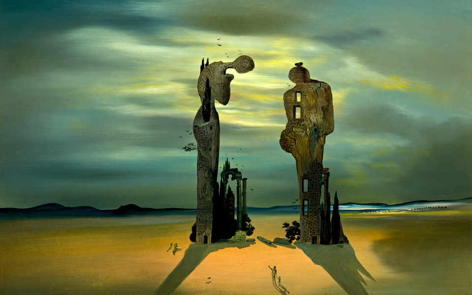
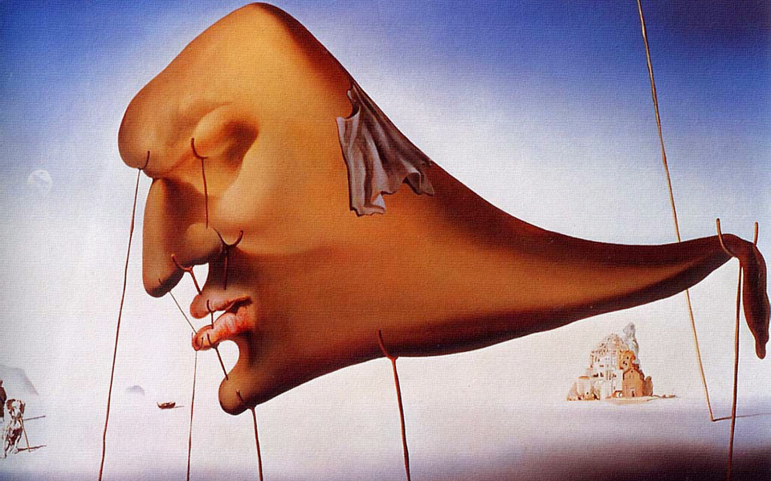
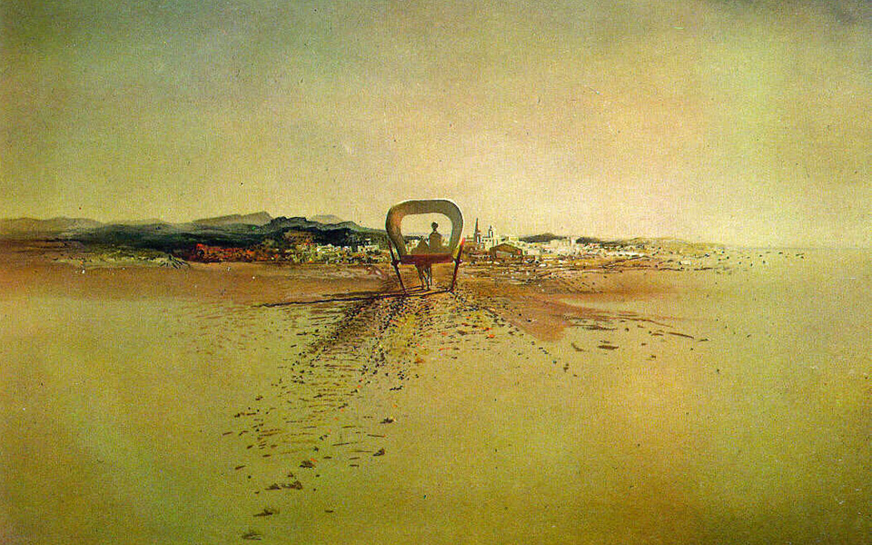
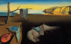

1935
Археологический отголосок «Анжелюса» Милле

1931
Постоянство памяти
1937
Сон
1933
Двуколка-привидение
1938
Явление лица и вазы с фруктами на берегу моря
— например, несколько сюрреализмов Сальвадора Дали. ©